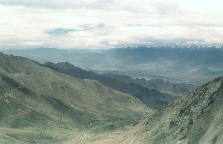
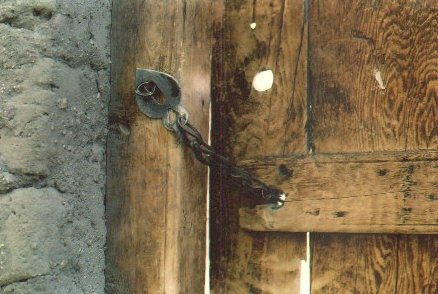

Day 10:
Marathon ride to Pang - Km 180 to 350
We get up and Peter has great news, the road has reopened. The jeeps gas us up from jerry cans and we tear off north, determined to get to Pang before they close the road again. Over Baralach La …. hmmmm, this looks familiar. For miles there are lone army sentries with rifles standing by the road, sometimes every 500 ft. We wave, they smile or nod their heads…… crazy tourists on bikes. Down into the valley through the streams and fast water again. I like the road signs along this highway .......
“ Be Gentle On My Curves ” or “ Better Mr. Late than Late Mr. ”
and my all time favourite ; “ If You Love Speed ……… Divorce Her ! ”
At the border to Ladakh we get off the bikes while Peter takes in our passports. A large dumptruck is just ahead of us, the driver’s door open. A woman passenger is in the front seat alone. Martin yells and I turn around to see the truck has started to roll very slowly back down the hill towards us. I run ahead and grab a brick-sized rock off the shoulder as I go, jamming it under the rear wheel. It does the job and the truck stops, only moving ten or fifteen feet. It happened so fast I didn’t think about it, I just moved. I get a thumbs up from the crew. This is why there are always 2 drivers in India, one puts the rocks against the rear wheel before the other gets out. We will dodge many of these rocks left in the middle of the road on steep hills .
We are cleared by the army to enter Ladakh. We leave Himachal Pradesh, and head down a valley following the river. Ahead is our first 5,000 meter pass, Lachlung La. The day is still sunny. The climb up is challenging gravel and dirt but not too severe and we celebrate at the top with more photos. The air feels thinner, but no one seems to be complaining. Our last few days chasing up and down have acclimatized us.
.
On our way down into Pang we travel through deep gorges with long sand dunes cascading down from the mountains. I take a photo of Peter with his front wheel parked on the edge. It is an interesting change from the sheer rock we have seen everywhere. I can imagine oceans here millions of years ago before it was thrust up. The Himalayas are very young compared to other ranges.
At Pang we cross a bridge with army guards and pull into the Tibetan tent city for a late lunch. It has been a long day, only 160 kms but many hours of hard riding. We will camp down by the river outside town. This will be a record for me, tenting at 15,600 ft. The moon and stars are more brilliant than I have ever seen. We light a bonfire after supper and turn up the ghetto blaster. Bloodhound Gang plays as the cold river rumbles past us twenty feet away. Life is great.
Day 11:
Tanglang La pass…… going higher
It is 7 am and I am standing outside my tent in Pang looking up the mountain road that snakes a thousand feet above us. All the loaded fuel trucks have been let loose after the night embargo and they are attacking the hill en mass heading north. There are dozens of them belching black diesel as they move left and right along the multiple hairpins, passing each other wherever they can. It is an awesome vision of grinding gears, belching black exhaust smoke, honking horns and cliff edge passing……… I am glad to be down here !
More plains
Later we climb up the same route and come to an amazing change in terrain. We are on the More Plains, a 50 km stretch of flat tablelands with green grass to the horizon and mountains on both sides. It is my idea of what the Mongolian steppes must look like. There are goat and yak herds scattered across the landscape, it looks like paradise after the desolate Pang.
My speedo seems to have quit , I find the cable has wrapped around the front axle when the housing came loose. By the time Martin stops to help I have it disconnected and tied up to the handle bars with some plastic cable ties I carry…… on we go.
Now we are heading up 20 kms of unpaved, rough and corrugated gravel and dirt to Tanglang La pass. There is a truck on its side over the edge at one place, having slid down the flat slope about 100 feet. Luckily the wheels are down the hill, and long poles have been wedged in below it to stop it from sliding more. It is another 1500 ft down to the river…… that driver must have said the right prayers. That explains the two old wrecker trucks we have been passing for the last few days.
The road is so rough now that I prefer to ride standing up on the pegs. I can go faster, and the bumps smooth out. We stop for a work crew halfway up. We cannot pass , the road is too narrow. There are forty or fifty kids and younger people crowded around their morning taxi, a dump truck. The door is open , and an argument seems to be going on with someone inside. Two men climb up into the cab and start laying into the driver. They get out… more arguing. We shut down the bikes and watch. Back in they go, more fists and out they get. The problem must be solved, because the driver starts up and moves on past us. The crew wave as we go by. All the road crews we pass on this trip seem to be very friendly…… glad I don’t drive their truck though.
Typical road repairs...... tar fires.
We finally reach the top of Tanglang La, pass, the second highest motor able road in the world at 5,360 meters (17,580 ft). It is overcast, grey, desolate and cold, not a place that makes you want to hang around long. There is a marker with the usual Tibetan prayer flags fluttering, and a stone building with snow on the slopes behind. We get some pictures and quickly head down the other side. Brrrrr. We have now crossed the Zanskar mountain range.
Another 40 kms and 2000 meters down through river canyons and we come to the Indus River at Upshi. This is a famous river that flows northwest into Pakistan then south to the Indian ocean near Karachi. We have covered 125 kms since Pang. There are trees and greenbelts along this valley, compared to the mountains it is an oasis . We stop for food and I take a photo of a holy man across the street near a prayer wheel.
.
Now we are cruising along the flatlands at 3,300 meters on pavement towards Leh, the capital. There are many villages and some impressive monasteries. Thikse is one of the best known . We see large Indian army garrisons along the way, this is a large base for the on again / off again border wars with Pakistan farther up the valley near Kargil. We arrive in the town of Leh and head to our hotel. Hotel La Ri Mo is a two story u shaped building with a nice courtyard for parking the bikes. We sit in the garden at a table under a tree and the waiter brings us beer and for me, mango juice. We are 185 kms from Pang, hot and tired but it has been a good day.
Day 12:
Leh
Prayer wheel in Leh
Today we will relax, mostly just walk around this historic town. Leh was a meeting place for caravans on the trade route from Tibet and central Asia. They came via the Karakoram Pass at 5570m on their way to the Kashmir valley. The crumbling 16th century Royal Palace dominates the town, it has many stories and sits high on Tesemo Hill. The atmosphere seems very friendly, even though there are many Indian soldiers with rifles on the main street as the night curfew is still in effect. The easy going Tibetan markets are a sharp contrast to the hard nosed Kashmiri merchants competing for your rupees as you pass their shops. I try to buy from the Tibetans , they have beautiful smiles and always seem to be genuinely happy to see you, and never upset if you don’t buy. Many of these people or their parents have walked across the mountains from Chinese controlled Tibet. I’m sure it is a harder trip than I will ever make.
.
Leh market Golf course in the sand bowl at Leh
I pick up some silver jewelry as presents and pay 18 rupees per gram, the going rate. They pull out small calculator sized electronic scales to weigh it. In one bazaar I see a bracelet with gold inlay that I like, and pick it up. The lady asks me what I want to pay for it……. I tell her that I am really just looking, but she still wants me to give her a price. I know what they cost in Delhi, but here they are half that. I tell her what I would pay ………. if I wanted it. She rolls her eyes and laughs kindly, shaking her head. I like this woman, she has a good aura. Her price is between mine and the Delhi price. I say thanks but it’s too much for me, and walk to the next table. A few minutes later she comes over, worried I will buy something from one of her friends instead. She says I can have it if I pay only 50 rupees more. Done. She looks at me again and laughs, knowing I have gotten a bargain ( at least I think so….... ). Later on the trip I meet another merchant who asks me what I paid for my bracelet. When I tell her , she shakes her head and says that this is not possible, and refuses to believe me. Must have been my lucky day.
We walk up the hill and visit the Buddhist temple called Shanti Stupa overlooking the town. The Dalai Lama was instrumental with it’s construction which is fairly new. There are ( I think) six hundreds steps up , it has a commanding view of the valley. Below us is a military parade ground with polo players charging back and forth. I walk down later and get a photo of them charging across the landscape. Off in the distance you can see a desert bowl between two hills. It looks hot and barren, just rocks and sand. There are small dots wandering across it, someone tells me it is the local golf course !
At night we eat in a restaurant up the street from our hotel. When we leave at 11 the power has been off for hours. Most shopkeepers run small generators on the sidewalk during the day, as the electricity often goes off without warning here. The streets are dark and a curfew is still in effect. Only the army, police…… and tourists are allowed to wander freely. We have the town to ourselves, a strange feeling. For sure this is the only time I will ever see empty streets in India. When we get home the hotel front office is locked up, all the staff have hurried home at 10pm before they are trapped at work. Henning and I can’t get our key, so we crawl in the tiny bathroom window. There are candles in the room, and Uwe will unlock us in the morning….. we hope. Uwe laughs.
Day 13:
To the top of the world
Road to Khardung La
This is the day we have all come here for. Last night we met another Peter ( and his wife ) from England. They have driven all the way from southern India in a new autorickshaw they bought for 1000 pounds. They plan to take it all the way to Khardung La. Peter keeps us laughing with his stories of riding on the edge of eternity with all their luggage and a 125cc motor. I can’t imagine the beating they took to get here over passes like Tanglang La. They are young and keen, I have no doubt they will make it. ( and they do ). Only the Brits are crazy enough to take a rickshaw !
Footnote: I told a Colorado friend Dan Bailey about our tour and he went to India the next summer on a mountain bike towing a one wheel trailer. Two of them went all the way from Manali to Leh, over the KhardungLa to the Nubra Valley and back to Manali !
( See his page at : www.danbaileyphoto.com/india/index.htm )
Passing yaks on the way
We head out of Leh 3,506m under blue skies. It is only 12 kms as the crow flies from Leh to the top of Khardung La pass at 5,603 m, but we will have to climb 2,000 meters to get there. Up the dirt road we go, until we clear the army post that controls the approach to the pass. Peter has permits from Leh, we pass without problem. As we ride higher we have a great view of the Indus river valley and the Zanskar mountains behind to the south. We are getting closer to the Karakoram mountains than the Himalayas now. It is a long climb with little traffic. An army jeep with 4 people passes us when we stop. Later we see them by the road having a break. There is the driver with an older officer and two ladies, probably a sight seeing trip for his family. The war has cooled down since last year, although there will always be thousands of soldiers stationed around Leh. Not far away on the 22,000 foot high Siachen Glacier, Pakistan and India still lob artillery shells at each other. It is the highest battlefield in history, most fatalities are from medical complications like pulmonary edema than guns.
The road is a mixture of dirt and gravel, towards the top it gets rougher. Before we know it we are there. We are now at 18,300 ft above sea level. We all look at each other, slowly realizing that we have actually made it. Lots of picture taking and back slapping.
.
I walk to the north side and gaze farther down the road into the Nubra Valley. Until 1992 it was off limits. Uwe calls me over and points to the northwest. He tells us that he has heard that you can see K2 from here, second highest peak in the world. We scan the mountains on the horizon, and there it is 100 kms away in Pakistan. I put my longest lens, the 135mm, on my camera so we can all see it larger. It is majestic, sticking up through the clouds. I need a much stronger lens to get a good photo though. It is still sunny but cold. Not much else up here but an army post, radio antennas and some bulldozers in various states of repair.We can all feel the altitude sapping our breath, so after about 30 minutes we are ready to descend. On the way down we stop for a herd of yaks blocking the way. By the time we get to Leh it feels like we have accomplished something not quite believable……. but it does feel good. This road has been summited by countless people and machines…….. bicycles, rickshaws, even inline roller skates we heard ( two crazy Italians ). It is not a hard feat for a motorcycle, I would probably rate Tanglang La as a tougher pass and more desolate in the weather I rode it returning south. But Khardung La is unique, you cannot drive on a higher public road anywhere else on the planet. Everest costs about $70,000 for a well heeled tourist climber, so this is the poor man’s answer to driving the equivalent and getting back alive.

Looking northeast into the Nubra Valley
You could fly in to Leh from New Delhi , spend 2 or 3 days acclimatizing (very important……. see note below ) and rent a Bullet locally if you had limited time. Pay for the permit to drive to Khardung La ….. and go do it ! I saw bikes for rent in Leh, and I am assuming they can go anywhere locally like the Nubra Valley if you have the right permits. What you would miss is an amazing road trip from the lowlands of New Delhi, and the opportunity to drive 4,000 and 5,000 meter passes all the way north to Leh.
We were told of one bus tour from Delhi a few years back that had gone almost nonstop to Leh in a couple of days. The driver was not mountain experienced, and after taking 40 odd people up to Khardung La the next day, ( that is an 18,000 ft altitude change in 3 days with nobody acclimatized ) , he lost control on the way down. Only two people survived. This event changed the rules, now permits are required by the army for any travelers to Khardung La pass.
We continue down the road into the Indus valley again and back to the hotel. We are all pretty dusty and road weary, the evening meal beckons. Leh has a curfew in effect from 9pm to 6am , only the army , police or tourists are allowed on the streets at night. We have a great meal in a local restaurant where one cook is over in the corner with a traditional tandoori oven. He is cooking all the meals for at least 50 people on the various levels of this ancient design earthenware oven. Propane is the only modification. He has no trouble keeping up with all the different orders, it is a impressive to watch him. A tall Dutch girl at our table has an intriguing necklace, a small scorpion is embedded in what looks like an amber pendant. She is one of only 3 or 4 females in the restaurant, all tourists. The men are all Kashmiri or Tibetan, I suspect that not many local women frequent this men’s social club as a rule.

| ------- To India part 4 --------- |